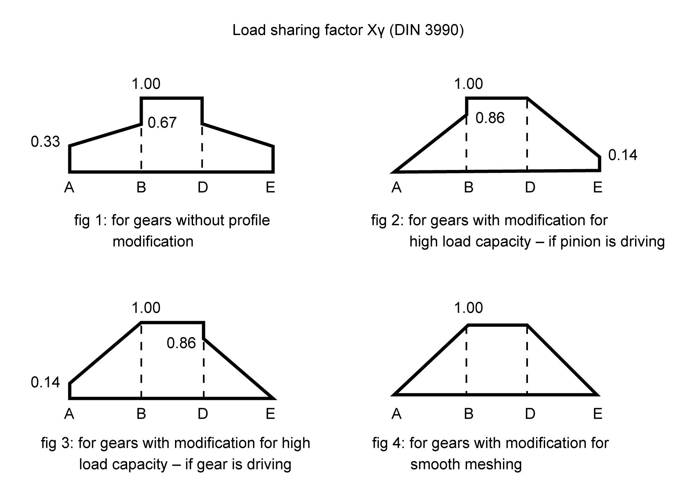

|
|
|


齿廓修形
您可以通过磨齿来修改高承载能力齿轮的理论渐开线。您可以在 KISSsoft 模块 Z15 中找到合理修改（圆柱齿轮）的建议（参见"修形"章）。
齿廓修形类型会影响齿间/齿向载荷分布系数 KHα 和 KHβ 以及胶合安全系数的计算方式。载荷分担系数 Xγ 根据齿廓修形类型以不同方式计算。主要区别在于齿廓是否已修形。但是，版本和版本之间的差异相对较小。强度计算标准假定齿顶修形 Ca 的尺寸合适，但没有提供具体指南。载荷分担系数 Xγ 根据 DIN 3990 的齿廓修形类型计算如下：

图 15.6：不同齿廓修形的载荷分担系数 Xγ
Profile modification
You can modify the theoretical involute in high load capacity gears by grinding the toothing. You will find suggestions for sensible modifications (for cylindrical gears) in KISSsoft module Z15 (see chapter Modifications).
The type of profile modification has an effect on transverse coefficients KHα and KHβ and on the way scuffing safety is calculated. The load sharing factor Xγ is calculated differently depending on the profile modification. The main difference is whether the profile has been modified or not. However, the differences between the versions for and for are relatively small. The strength calculation standard presumes that the tip relief Ca is properly sized, but does not provide any concrete guidelines. The load sharing factor Xγ is calculated as follows, depending on the type of profile modification according to DIN 3990:
Figure 15.6: Force distribution factor Xγ for different profile modifications